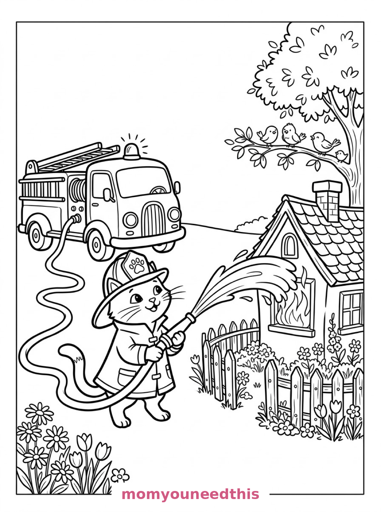
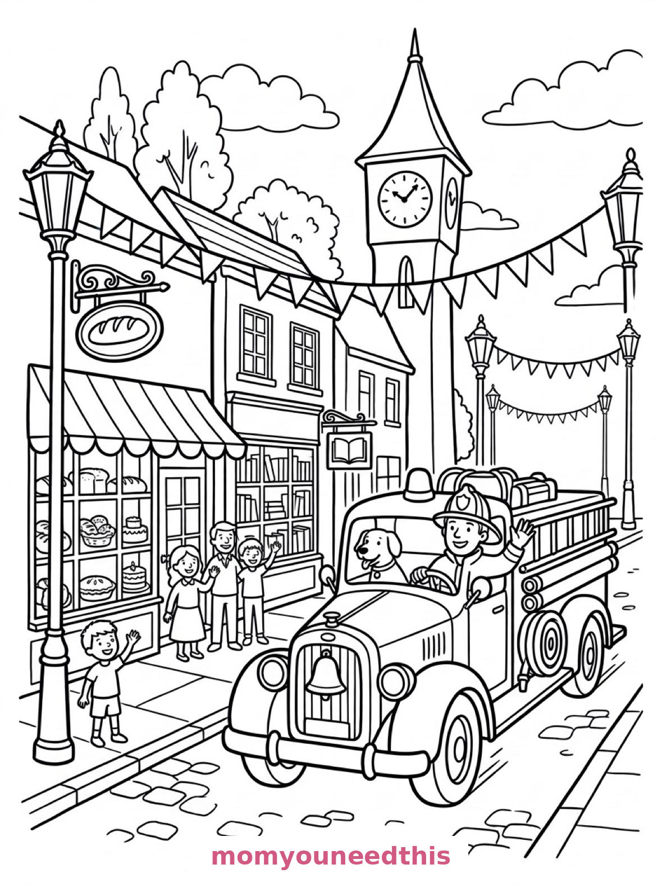

Free Fire Truck Coloring Pages Station, Rescue Cat & Vintage Parade Printables
These free fire truck coloring pages answer three different calls — a truck waiting at its brick station, a firefighter cat saving a cottage, and a vintage truck leading a parade. Download the set below, print at home on letter-size paper, and let the coloring fun begin. No signup needed.
Last updated: October 23, 2026
Quick Answer
Yes — this page has three free printable fire truck coloring pages: a fire truck parked outside a brick fire station with a Dalmatian, a firefighter cat spraying a cottage window, and a vintage fire truck on a village parade route. Bold outlines and big spaces, made for little hands. Download, print on letter-size paper, and hand over the crayons — no signup, no cost.
At a Glance
- Ages: 3–8
- Pages: 3 free printables
- Format: Print at home, letter size
- Cost: Free, no signup
- Supplies: Crayons or markers
- Time: 10–20 minutes
🚒 Fire Truck at the Station Coloring Page

🎨 Download Your Free Fire Station Coloring Page
A fire truck parked outside a brick fire station with its ladder raised toward the roof, hoses coiled on its side, a Dalmatian by the open doors, and traffic cones and a hydrant along the curb — bold outlines, big spaces, zero signup.
⬇️ Download Free Fire Station Page 🖨️ Print Fire Station Page🎁 Free printable for preschoolers & kids
🐱 Firefighter Cat to the Rescue Coloring Page

🎨 Download Your Free Firefighter Cat Coloring Page
A fire truck sprays an arc of water toward gentle flames in a cottage window while a firefighter cat in a helmet holds the nozzle, with a garden fence, flower beds and birds watching from a tree — bold outlines, big spaces, zero signup.
⬇️ Download Free Firefighter Cat Page 🖨️ Print Firefighter Cat Page🎁 Free printable for preschoolers & kids
🔔 Vintage Fire Truck Parade Coloring Page

🎨 Download Your Free Vintage Fire Truck Coloring Page
A vintage fire truck with rounded fenders and a brass bell drives down a village high street, passing a bakery, a bookshop and a clock tower, with bunting strung between the lampposts — bold outlines, big spaces, zero signup.
⬇️ Download Free Vintage Truck Page 🖨️ Print Vintage Truck Page🎁 Free printable for preschoolers & kids
More Coloring Pages
Tap any picture to open its theme page and download the free printable.


🚒 How To Use This Page
- Browse the three designs and pick the fire truck scene your child will love most.
- Tap download or print under that design — the file opens full-size, ready for letter-size paper.
- Print a couple of copies of the station truck — every little firefighter colors it differently.
- Color together with crayons or markers and sound the siren.
🔥 Why Kids Love Fire Truck Coloring Pages
Fire trucks are the heroes of the road, and these pages let kids spend time with three versions of one: the working truck at its station, a rescue in progress (with a cat holding the hose), and a grand old vintage truck dressed for a parade. Ladders, bells, hoses and hydrants give every page mechanical details to discover.
The Dalmatian and the firefighter cat do quiet work here, too — they are the details kids remember, name, and ask for by name the next time the crayons come out. A truck page with characters and a small story inside it gets colored for twice as long as a plain vehicle ever does — and remembered twice as fondly afterward, too.
🚒 Meet the Three Fire Truck Scenes on This Page
The truck at the station. A fire truck stands outside a brick fire station with its ladder raised toward the station roof, hoses coiled on its side, a Dalmatian sitting by the open station doors, and traffic cones and a hydrant along the curb. It is the classic page in the set — one big red truck, one spotty dog, and a whole station to build.
The firefighter cat. A fire truck sprays an arc of water from its hose toward gentle flames in a cottage window while a firefighter cat in a helmet holds the nozzle, with a garden fence, flower beds and grateful birds watching from a tree. It is the most story-like page in the set — a rescue with a happy ending already in it.
The vintage parade truck. A vintage fire truck with rounded fenders and a brass bell drives down a village high street, passing a bakery, a bookshop and a clock tower, with bunting strung between the lampposts for a parade. It is the most detailed page in the set, and older kids love the old-fashioned shapes.
✏️ Fire Truck Coloring Tips
- Red is classic, not compulsory. Fire trucks are red in most towns — but yellow, green and even pink trucks all exist on coloring pages, and this one is your child's.
- Make the water arc light blue. A pale blue sweep from hose to window tells the rescue story instantly.
- Color the Dalmatian's spots. The spots are printed as outlines on the station page — fill them black, or make them rainbow for a party Dalmatian.
- Gold for the brass bell. Yellow or gold on the vintage truck's bell and trim makes the whole parade page shine.
🚒 Coloring Pages for Different Ages
For ages 3 to 4, start with the station truck. One big truck shape, a ladder and a dog are all a little colorer needs to feel like a firefighter.
For ages 5 to 6, the firefighter cat is the sweet spot. The truck is still big and bold, but the water arc, the cottage and the watching birds add a story to build.
For ages 7 to 8, hand over the vintage parade truck. The high street, the clock tower, the shop windows and the bunting reward careful, detailed coloring.
🔔 More Fire Truck Fun After Coloring
Line the finished pages up as a story — station, rescue, parade — and let your child narrate the truck's whole day. Who called for help? What is the parade celebrating? The pages write the prompts; the kids write the story.
Meet the truck's road partners on the police car coloring pages — a station, a school crossing and a parade of its own. And for more working wheels, the truck coloring pages are parked nearby.
🔗 More Free Printables You’ll Love
- Free Police Car Coloring Pages A station, a school crossing and a parade to color.
- Free Truck Coloring Pages Trucks to print and color, with bold outlines and big spaces.
- Free Train Coloring Pages A viaduct, a country station and a mountain freight run.
- All Free Coloring Pages Browse every free coloring page on the site, organized by theme.
❓ Fire Truck Coloring Pages FAQ
Are these fire truck coloring pages really free?
Yes — all three designs on this page are free original printables from MomYouNeedThis. Download them, print them at home, and color — no signup and no cost.
What ages are these coloring pages best for?
Kids ages 3 to 8 get the most from this set. The station truck is the gentlest start for younger children, while the rescue and vintage parade scenes have the detail older kids enjoy.
How do I print a coloring page?
Tap the download button under the design you want, then print the file on regular letter-size paper. The print button opens the full-size page in a new tab if you prefer to print from there.
Is there a Dalmatian on the fire station page?
Yes — a Dalmatian sits by the open station doors on the first design, next to the truck with its ladder raised. The second design stars a firefighter cat instead.
Can I make a fire truck coloring book from these pages?
Yes — print all three designs, stack them in order, and staple along the left edge. Add a cover sheet with your child's name for a finished homemade fire truck coloring book.